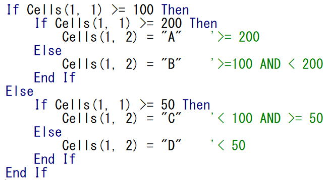

第20回.条件分岐（IF）

ある条件の時だけ処理したい、ある条件の時は処理したくない、そのような条件によって処理内容を変更したい場合があります。
VBAで条件により処理を分岐させたい場合に使うのが、Ifステートメントです。
プログラムにおいて、最も重要なステートメントのひとつがIfステートメントと言えます。
Ifステートメントの構文
真の処理 ・・・ 条件式を満たした場合の処理
[Else
偽の処理] ・・・ 条件式を満たさない場合の処理
End If
偽とは、条件式を満たさない場合
条件を満たしている（合致している）場合は真の処理、それ以外の（条件式を満たさない）場合は偽の処理を実行します。
IFステートメントの条件式
真(True)か偽(False)を評価する数式または文字列式で指定します。
文字列式とは、文字列と比較演算子・論理演算子の組み合わせです。
比較演算子
| 比較演算子 | 意味 |
| = | 等しい |
| <> | 等しくない |
| > | より大きい |
| >= | 以上 |
| < | より小さい |
| <= | 以下 |
論理演算子
| 論理演算子 | 意味 | 条件例 | 結果 |
| And | 論理積 | True And True | TRUE |
| True And False | FALSE | ||
| False And True | FALSE | ||
| False And False | FALSE | ||
| Or | 論理和 | True Or True | TRUE |
| True Or False | TRUE | ||
| False Or True | TRUE | ||
| False Or False | FALSE | ||
| Xor | 排他論理和 | True Xor True | FALSE |
| True Xor False | TRUE | ||
| False Xor True | TRUE | ||
| False Xor False | FALSE | ||
| Not | 論理否定 | Not True | FALSE |
| Not False | TRUE | ||
| Eqv | 論理等価 | ||
| Imp | 論理包含 |
And、Or、Not以外の論理演算子は当分は使用する必要はないでしょう。
特にマクロVBAを他人と共有する場合は、自分が分かるからといってむやみに難しいものを使うことは避けるべきです。
Is演算子
If オブジェクト1 Is オブジェクト2 Then
オブジェクト1とオブジェクト2の両方が同じオブジェクトを参照する場合はTrueになります。
※Is演算子については、第52回.オブジェクト変数とSetステートメントで説明します。
オブジェクト変数については、今後の学習で少しずつ覚えていけば良いです。
Ifステートメントの使用例文
IFステートメントの例文１
If Cells(1, 1) >= 100 Then Cells(1, 2) = "○"
※.Valueは省略しています。
A1セルが100以上の場合、B1セルに"○"
IFステートメントの例文2
If Cells(1, 1) >= 100 Then
Cells(1, 2) = "○"
End
If
例文１．と同じです。
特に事情（１行で書く事でプログラムの可読性を高めたい等の場合）が無い限り、こちらを使いましよう。
IFステートメントの例文3
If Cells(1, 1) >= 100 Then
Cells(1, 2) = "○"
Else
Cells(1, 2)
= "×"
End If
A1セルが100以上の場合、B1セルに"○"
A1セルが100未満の場合、B1セルに"×"
IFステートメントの例文4
If Cells(1, 1) >= 100 Then Cells(1, 2) = "○" Else Cells(1, 2) = "×"
これは、例文3．と同じですが、この使い方はしない方がよいです、
プログラムが見づらくなり、また、ブレークポイントの設定が出来ない等デバッグがしづらくなります。
Ifステートメントのネスト（入れ子）
If Cells(1, 1) >= 100 Then
If Cells(1, 1) >= 200
Then
Cells(1, 2) = "A" '>= 200
Else
Cells(1, 2) = "B" '>=100 AND < 200
End If
Else
If Cells(1, 1) >= 50
Then
Cells(1, 2) = "C" '< 100 AND >= 50
Else
Cells(1, 2) = "D" '< 50
End If
End
If
A1セルが
>= 200の場合、B1セルに"A"
>=100 AND < 200の場合、B1セルに"B"
< 100 AND >= 50の場合、B1セルに"C"
< 50の場合、B1セルに"D"
それ以上になる場合は、条件式を工夫してみましょう。
サイト内のIfステートメント参考ページ
最後に
IFの文法を理解しても、なかなかサクッとは書けないものです。
その後も、マクロVBAを書いていく上では常にIfの書き方は意識しながら書いてみてください。
同じテーマ「マクロVBA入門」の記事
第17回.繰り返し処理（Do Loop）
第18回.最終行の取得（End,Rows.Count）
第19回.総合練習問題1
第20回.条件分岐（IF）
第21回.条件分岐（ElseIf）
第22回.条件分岐（Select Case）
第23回.メッセージボックス(MsgBox関数)
第24回.インプットボックス(InputBox関数)
第25回.名前付き引数について
第26回.総合練習問題2
第27回.ブック・シートの選択（Select,Activate）
新着記事NEW ・・・新着記事一覧を見る
VBA100本ノック 100本目：WEBから100本ノックのリストを取得｜VBA練習問題（3月3日）
VBA100本ノック 99本目：自動席替え（行列と前後左右が全て違うように）｜VBA練習問題（3月2日）
VBA100本ノック 98本目：席替えルールが守られているか確認｜VBA練習問題（3月1日）
VBA100本ノック 97本目：Accessデータを取得（グループ集計）｜VBA練習問題（2月27日）
VBA100本ノック 96本目：Accessデータを取得（マスタ結合&抽出）｜VBA練習問題（2月26日）
VBA100本ノック 95本目：図形のテキストを検索するフォーム作成｜VBA練習問題（2月24日）
VBA100本ノック 94本目：表範囲からHTMLのtableタグを作成｜VBA練習問題（2月23日）
VBA100本ノック 93本目：複数ブックを連結して再分割｜VBA練習問題（2月22日）
VBA100本ノック 92本目：セルの色を16進で返す関数｜VBA練習問題（2月20日）
VBA100本ノック 91本目：時間計算（残業時間の月間合計）｜VBA練習問題（2月19日）
アクセスランキング ・・・ ランキング一覧を見る
1.最終行の取得（End,Rows.Count）｜VBA入門
2.RangeとCellsの使い方｜VBA入門
3.変数宣言のDimとデータ型｜VBA入門
4.マクロって何？VBAって何？｜VBA入門
5.Range以外の指定方法（Cells,Rows,Columns）｜VBA入門
6.セルのコピー&値の貼り付け（PasteSpecial）｜VBA入門
7.繰り返し処理（For Next)｜VBA入門
8.セルに文字を入れるとは（Range,Value）｜VBA入門
9.マクロはどこに書くの（VBEの起動）｜VBA入門
10.とにかく書いてみよう（Sub,End Sub）｜VBA入門
このサイトがお役に立ちましたら「シェア」「Bookmark」をお願いいたします。
記述には細心の注意をしたつもりですが、
間違いやご指摘がありましたら、「お問い合わせ」からお知らせいただけると幸いです。
掲載のVBAコードは動作を保証するものではなく、あくまでVBA学習のサンプルとして掲載しています。
掲載のVBAコードは自己責任でご使用ください。万一データ破損等の損害が発生しても責任は負いません。